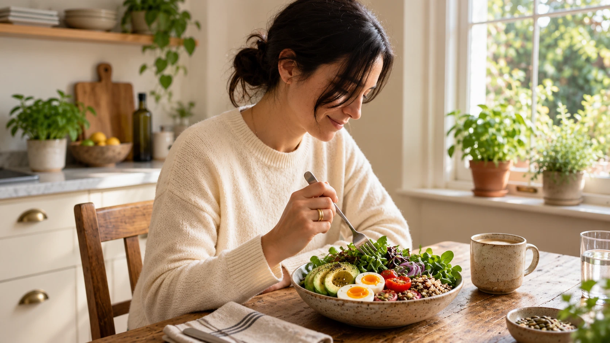
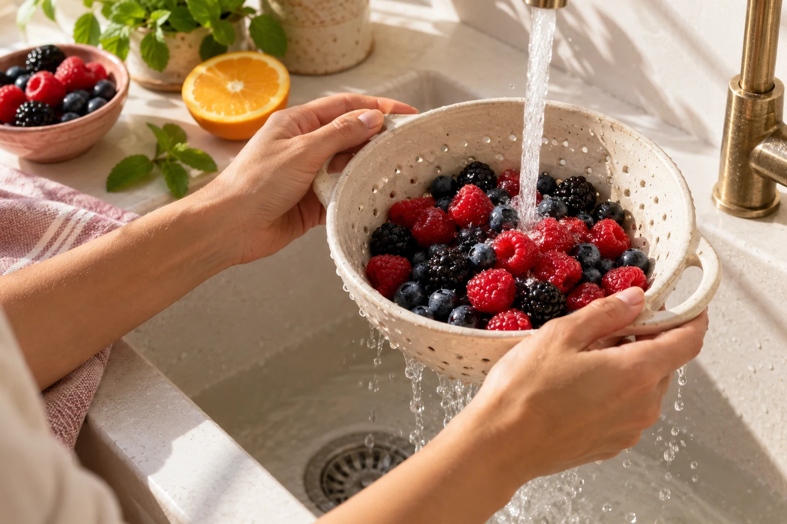

AL INGRESAR
Cuestionario de ingreso
Completás tu historia clínica, hábitos, análisis y objetivos. Así llegamos a la primera consulta con toda tu información.
FÉRTIL NUTRICIÓN Y FERTILIDAD
Acompañamiento nutricional 1:1 · 8 semanas
Trabajamos sobre tu alimentación, tus análisis y tus hábitos, con un plan pensado para vos y seguimiento cercano en cada etapa.
Quiero conocer Fértil1:1 cupos limitados Consultas online
 QUIÉN TE ACOMPAÑALic. Julieta LupardoNutrición y metabolismo hormonal
Conocé el acompañamiento
QUIÉN TE ACOMPAÑALic. Julieta LupardoNutrición y metabolismo hormonal
Conocé el acompañamiento

01 UN ESPACIO PARA VOS
Quizás estás por empezar la búsqueda. Quizás llevás tiempo intentando, recibiste un diagnóstico o estás preparando un tratamiento.
Entre estudios, recomendaciones y suplementos, puede ser difícil saber qué tiene sentido para tu caso. En Fértil nos tomamos el tiempo para mirar tu historia y ordenar los próximos pasos desde la nutrición.
Un plan que tenga en cuenta dónde estás hoy, y que puedas llevar a tu vida cotidiana.
02 EL ACOMPAÑAMIENTO, EN DETALLE
Desde el cuestionario de ingreso hasta el informe de cierre. Cinco consultas online y seguimiento personalizado durante las 8 semanas.
Nutrición pensada
para tu día a día.
1 consulta inicial de 60 minutos
+ 4 consultas de seguimiento de 30 minutos cada una.
AL INGRESAR
Completás tu historia clínica, hábitos, análisis y objetivos. Así llegamos a la primera consulta con toda tu información.
ANTES DE LA PRIMERA CONSULTA
Recibís una guía exclusiva de Fértil: cómo funciona el acompañamiento, qué esperar en cada etapa y cómo aprovechar el proceso.
SEMANA 1 · VIDEOLLAMADA
Una primera consulta de 60 minutos. Revisamos la información del cuestionario, evaluamos tu situación y diseñamos tu plan personalizado.
SEMANAS 2 A 7 · VIDEOLLAMADAS
30 minutos cada una para evaluar avances, hacer ajustes personalizados en cada etapa y resolver tus dudas.
SEMANA 8
Recomendaciones claras y personalizadas para saber cómo seguir después de las 8 semanas.
DURANTE LAS 8 SEMANAS
Para consultar dudas y hacer ajustes entre las consultas.
Seguimiento estructurado cada semana para acompañarte y sostener el proceso.
Revisión de tus estudios desde la nutrición, teniendo en cuenta tu búsqueda de embarazo.
Adaptado a tu diagnóstico, tus objetivos y la etapa que estás atravesando.
Adaptadas a tu plan, tus gustos y tu diagnóstico, para llevarlo a tus comidas cotidianas.
Para organizar tus compras y tener a mano lo que necesitás para seguir el plan.
03 PASO A PASO

ANTES DE EMPEZAR
Completás el cuestionario de ingreso y recibís la guía de bienvenida. Llegamos a la primera consulta con tu información organizada.
SEMANA 1
En la primera consulta revisamos tu caso en detalle y definimos un plan nutricional personalizado.
1 consulta · 60 minutosSEMANAS 2 A 7
Nos volvemos a encontrar para revisar cómo venís, resolver dudas y adaptar el plan a lo que necesitás.
4 consultas · 30 minutos c/uSEMANA 8
Cerramos el proceso con un informe y recomendaciones para sostener lo trabajado.
También entre consultas. Contacto por WhatsApp y check-in semanal durante las 8 semanas.
04 CADA HISTORIA ES DISTINTA
Querés trabajar tu alimentación con un seguimiento personal, teniendo en cuenta tu diagnóstico y el momento que estás atravesando.
Contame tu situaciónEstás buscando embarazo o querés prepararte para empezar.
Tenés SOP, endometriosis, resistencia a la insulina, hipotiroidismo o baja reserva ovárica.
Estás por iniciar un tratamiento de reproducción asistida y querés acompañarlo desde la nutrición.
Necesitás ordenar la información y sostener los cambios con orientación profesional.
El acompañamiento nutricional complementa la atención de tu equipo médico. No reemplaza los tratamientos de fertilidad ni garantiza un embarazo.
05 TESTIMONIOS
Mensajes reales recibidos por WhatsApp.
Cuando arranqué con vos buscaba algo más que una dieta. Necesitaba sentir que estaba haciendo algo concreto para acompañar a mi cuerpo y llegar mejor al tratamiento. Me ayudó muchísimo ordenar la alimentación, entender cosas que nadie me había explicado y sentirme acompañada durante todo el proceso. Llegué a esta transferencia mucho más tranquila, más preparada y confiando más en mi cuerpo.
Te conocí luego de un diagnóstico de endometriosis, por una infertilidad secundaria. Me guiaste para encontrar un camino por dónde seguir, ya que estaba muy perdida. Ayudaste a mi cuerpo a sentirse mucho mejor y a prepararse para atravesar de la mejor manera una FIV. Hoy estoy embarazada de 15 semanas.
Quería contarte que estoy embarazada de 9 semanas. Siento que todo el trabajo que hicimos con la alimentación fue clave para ordenar mi cuerpo y llegar a este momento.
Estoy embarazada… todavía estoy en shock. Después de todo este tiempo buscando y pasando por tantos momentos de angustia, no puedo creer haber visto el positivo. Siento que todo lo que trabajamos estos meses me ayudó muchísimo. No solo físicamente, también a bajar un cambio y volver a conectar con mi cuerpo desde otro lugar. Gracias por acompañarme tan lindo en todo el proceso.
Tengo una muy buena noticia: estoy embarazada de 8 semanas. Quería contarte porque siento que el cambio de alimentación me súper ayudó.
Cada experiencia es personal. Los resultados y los tiempos varían en cada caso.
06 QUIÉN TE ACOMPAÑA
Me especializo en fertilidad y metabolismo hormonal. Acompaño a mujeres que están buscando embarazo o se están preparando para hacerlo.
En consulta hay espacio para tus estudios, pero también para tus preguntas, tus hábitos y lo que te resulta difícil sostener. Todo eso importa al momento de construir un plan.
Creé Fértil para poder trabajar con esa profundidad y seguir de cerca cada proceso. Por eso el acompañamiento es individual y los cupos son limitados.
Encontrame en @julilupardoEL PRIMER PASO ES CONVERSAR
Escribime FÉRTIL por Instagram y contame tu situación.
Te cuento cómo funciona y vemos si es lo que necesitás hoy.
1:1 cupos limitados · 8 semanas · Modalidad online